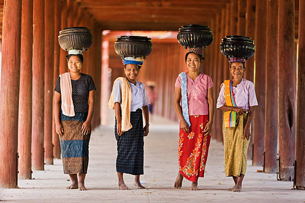

Welcome to Dignifying Myanmar
Myanmar people are friendly and are especially ready with a warm smile to welcome a foreign person. They have a genuine interest in a person as a person, not out of curiosity but from fellow-feeling. This feeling is reinforced by the notion generally held that people meet in this life because they had been friends in a previous life and that now is the chance to renew old friendships. Thus, any meeting of people starts from the basis of friendly.Myanmar people exhibit a readiness to help. They may not articulate the question, “May I help you?”. They do not wish to be considered as interfering. But they stand by and are ready to step forward with a helping hand if asked. So do not hesitate to ask for help whenever you need it. They may not speak much English but most will understand what you want.
How beautiful is Myanmar?
As you travel past the growing bustle of Yangon, you'll find picturesque Inle Lake, misty morning in mountain regions, the mighty Irrawaddy River, and Bagan's emerald plains sprinkled with thousands of temples amidst the trees. In addition to beautiful landscapes, Myanmar is radiant with a crown of shimmering gold.
What is so special about Myanmar?
Myanmar is a massive country with a relatively small population. There are miles upon miles of untouched landscapes — soaring mountains, pristine beaches and meandering waterways. Even in the big cities, like Mandalay, it is only a short distance from the busy downtown streets to the rice paddies and countryside.
Myanmar,Known for sublime landscapes, a rich history, serene people and a deeply Buddhist culture, Myanmar is a largely-rural, densely-forested country. The capital of Yangon offers a dynamic scene of contemporary arts, culture and cuisine mixed with a touch of colonial heritage while Bagan's centuries-old pagodas and archaeological treasures are endlessly captivating. The nation's spiritual and artistic heart lies in Mandalay, where hundreds of monasteries can be found in the surrounding hillsides and saffron-robed monks pass down age-old wisdom. The Ayeyarwady River provides a scenic backdrop to idyllic river cruises while Inle Lake and surrounding region offers adventurous treks to ethnic villages, farmland and valleys in the shadow of the Shan Hills.
Is Myanmar a good place?
Travel to almost all parts of Myanmar is safe. Smartraveller.gov.au advice says visitors to Yangon, Bagan, Mandalay and Inle Lake should use normal safety precautions. Anyone thinking about visiting Rakhine State should reconsider their need for travel. The overall rating for the country is “high degree of caution”.
Is Myanmar a beautiful country?
Myanmar, the official name of the Southeast Asian nation commonly known as Burma is a must-visit destination for travelers who like beaches and Buddha. This beautiful country is dotted with thousands of Buddhist temples. Besides, it has serene white beaches along the Andaman Sea and the Bay of Bengal.